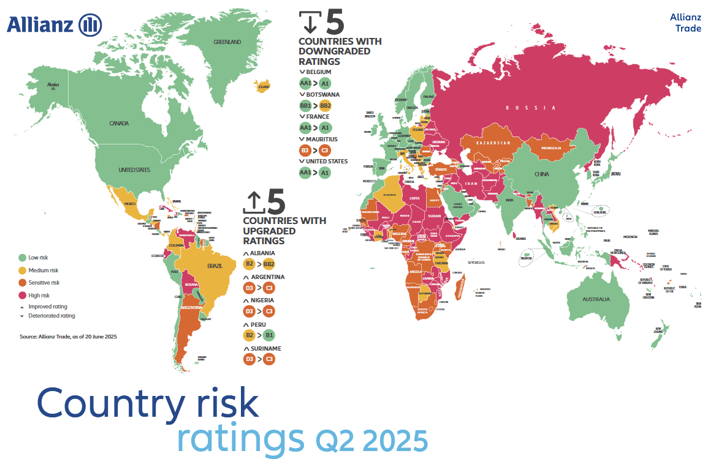
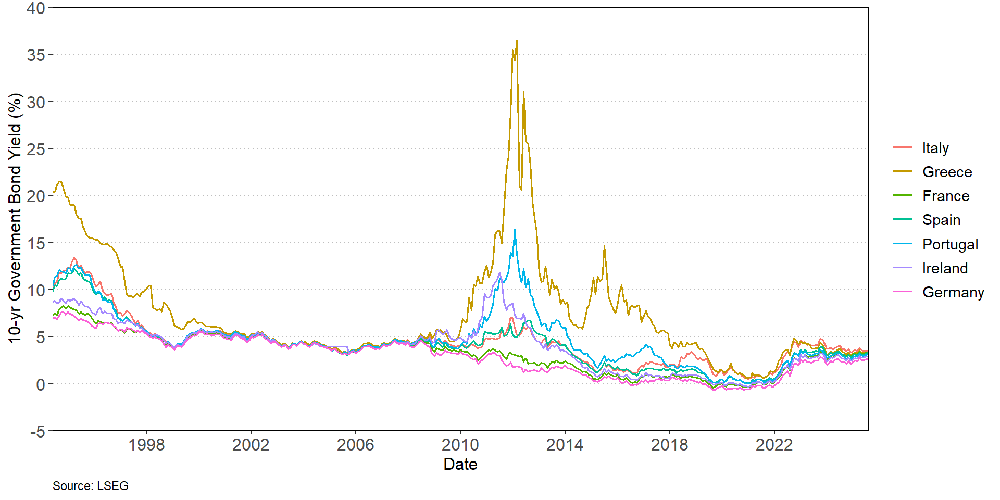

Sovereign Risk
and
Off-Balance Sheet Risk
FIN 331 Lecture 6
Andrew Ainsworth
University of Wollongong
Lecture outline
- Sovereign risk
- Risks related to restrictions being imposed by governments
- How can sovereign risk be estimated?
- Off-balance sheet risk
- Contingent assets and liabilities that can appear on the balance sheet in the future
- Primarily related to derivative activities
Sovereign risk
- Sovereign risk refers to the risk that borrowers located in a foreign country are unable to meet their repayment obligations to the lender because the foreign government has restricted or prohibited debt repayments
- This restriction could be because of political motives or a shortage of foreign currency with which to make the repayments
- Also referred to as country risk
- Sovereign risk is different to foreign exchange risk that banks face from currency fluctuations (studied in FIN 241)
- Sovereign risk is related to credit risk
Sovereign risk vs credit risk
- If a domestic firm refuses to meet its repayment obligations to a domestic borrower then the lender would first attempt to restructure the loan
- If that was unsuccessful then the lender would have legal options to pursue the borrower to recover any collateral
- Consider now a foreign borrower that is able to make its scheduled repayments but is prohibited from doing so because of government restrictions
- The firms has defaulted on its payments, but it is not because it is a high credit risk
- The foreign government’s decision is a sovereign risk event that is not reflective of the credit quality of the borrower
- Domestic lenders can pursue domestic borrowers through the legal system in a domestic context
- There is no international bankruptcy court
Sovereign risk vs credit risk
- The lender has little options other than negotiation
- Note that any domestic asset of the foreign borrower could potentially be targeted in bankruptcy proceedings
- Two-step process for lending to foreign borrowers
- Assess credit quality of borrower
- Apply credit risk premium or credit rationing
- Assess the sovereign risk quality of the country in which the borrower resides
Sovereign risk events
- Debt repudiation: an outright cancellation of a borrower’s current and future debt obligations
- Relatively few repudiations reflects recent international policy toward the poorest countries in the world
- Heavily indebted poor countries have had debt obligations cancelled if they take economic and social policy actions that reduce poverty
- Debt restructuring: changing the contractual terms of a loan (e.g. maturity and/or interest payments)
- This is more common than debt repudiation
- A country declares a moratorium (delay on its current and future debt obligations) and then seeks to ease credit terms through a restructuring of the contractual terms
Sovereign risk events
- International loan rather than bond financing makes restructuring more likely for reasons related to the inherent nature of international loan versus bond contracts
- There are generally fewer banks in a lending syndicate compared with the number of bondholders that makes it easier to renegotiate contractual terms
- The loan syndicates contain many of the same banks, which makes it easier to renegotiate
- Many international loan contracts contain cross-default provisions, meaning that a default on one loan is considered a default on all loans
Sovereign risk evaluation
- There are numerous approaches to evaluate sovereign risk
- Qualitative vs quantitative models
- External agency data versus internal data sources
- Standard and Poor’s, Moody’s and Fitch all provide credit ratings on sovereign issuers
- Can use credit scoring models like those discussed in credit risk lecture
- Explanatory variables are macroeconomic variables (e.g. debt service ratio, money supply growth, investment ratio)
- These models do face issues as discussed previously
- In addition they might overlook important factors that cannot be measured
- Need to include political risk factors and not just economic
- Strikes, elections, corruption, revolutions
- New data measures are being released to try to capture these omitted variables (e.g. Economic Policy Uncertainty and Geopolitical Risk Index)
Sovereign risk evaluation
- Allianz Trade (formerly Euler Hermes) provides a medium-term country rating (country grade) and a short-term country rating (country risk level)
- The medium-term rating (AA, A, BB, B, C D) is based on
- Macroeconomic factors such as economic structure, fiscal policy, monetary policy, debt levels, banking system stability
- The “Structural Business Environment” that captures regulatory and legal framework, corruption, environmental sustainability
- Political factors such as electoral processes, concentration of power, independence of institutions
- The short-term rating (1 to 4) focuses on risks over a 12-month horizon and covers financing flows and commercial risk
Sovereign risk evaluation

Sovereign risk evaluation
- OECD Country Risk Classifications “reflect the risk that a country will not be able to repay its external debt”
- The risk that the government will impose capital or foreign exchange controls
- The risk of adverse events: war, expropriation, revolution, civil disturbance, floods, earthquakes
- An independent technical group determines the ratings
- Quantitative assessment using four risk indicators
- Payment experience (is country meeting its debt repayment obligations)
- Financial situation
- Economic situation
- Institutional situation (i.e. governance)
- Qualitative assessment to adjust for other factors overlooked by the model
The European sovereign debt crisis
- Greece experienced a sovereign debt crisis between 2009 and 2015
- This spread to other countries
- Portugal, Spain, Italy and Ireland
- Greece received three bailouts from European Union and the IMF between 2010 and 2015
- Greece was forced to undertaken economic reform and implement austerity measures
The European sovereign debt crisis

Off-balance sheet risk
- Off-balance sheet (OBS) items are contingent assets and liabilities that impact a bank’s balance sheet in the future
- OBS items can have either a positive or negative impact on cash flows in the future
- Off-balance sheet items move on to the balance sheet when a contingent event takes place
- Types of off-balance sheet activities
- Loan commitments
- Letters of credit
- Derivatives contracts (futures, forwards, options and swaps)
- Given the contingent nature of the OBS asset/liability, option pricing models are often employed to determine the contingent value
- The bulk of the growth in OBS activities is due to derivative trading
Off-balance sheet risk
- Businesses can borrow against a line of credit or loan commitment where the interest rate and maximum loan amount are pre-arranged with the lender
- Bank is exposed to interest rate risk if it commits to a fixed rate
- The bank could also be exposed to interest rate risk if it commits to a variable rate but it’s cost of funds does not move in line with the variable lending rate (basis risk)
- The banks faces uncertainty over if, and when, the option to take down the loan will be exercised by the borrower
- Banks can face credit risk if the credit quality of borrowers change after the commitment is entered into
- Banks can be exposed to aggregate funding risk, whereby the loan commitments are taken down at the precise time that it is difficult for bank to obtain the liquidity needed to fund the loans (i.e. financial crisis)
Off-balance sheet risk
- Letters of credit
- Raise fee revenue
- Guaranty sold by a bank to underwrite performance of the buyer of the guaranty
- Used extensively in trade financing
- Exposes banks to credit risk of the buyer of the guaranty
- Derivatives
- Credit risk in over-the-counter (OTC) contracts as counterparty can default
- Credit risk is not a concern in exchange-traded markets
- Hedging using derivatives contracts is necessary for most banks so OBS assets and liabilities is not inherently a problem
- APRA collects data on OBS activities through Reporting Standard ARS 118.0 Off-balance Sheet Business
- Focus is on OTC derivatives and OBS liquidity support facilities (assets and liabilities)
Conclusion
- Sovereign risk
- Quality corporate loans can be impacted by sovereign risk
- Governments can limit the flow of capital and foreign exchange that causes corporate defaults
- Sovereign risk is driven by macroeconomic, political and social determinants
- Off-balance sheet risk
- Risks can be “hidden” off the balance sheet
- Derivatives contracts comprise the bulk of these risks